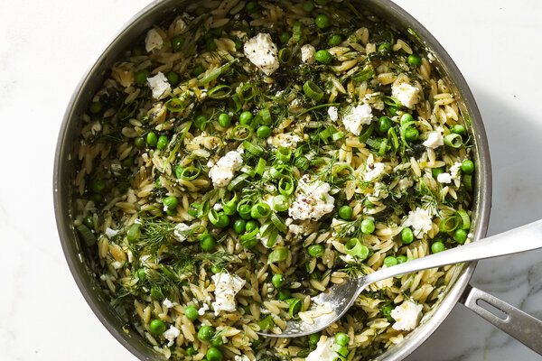

One Pan Orzo with Spinach and Feta

Return home
Yield: 2-3 servings
Time: 30-45 minutes
Description
Nobody likes these so I won't waste your time. It's pasta and cheese. You like those things. Just make and eat it.
Ingredients
- 8 oz baby spinach leaves, coarsely chopped
- 1 cup orzo
- 3/4 cup crumbled feta, plus more if you are a good person who likes feta
- 1 3/4 cups chicken or vegetable stock
- 2 tbs unsalted butter
- 4 large scallions, trimmed and thinly sliced
- 4 large garlic cloves, minced
- 1 tsp kosher salt
- 1 tsp finely grated lemon zest
- parsely or cilantro, chopped for garnish
Preparation
- Heat a 10-inch skillet over medium, then melt butter (30 seconds to 1 minute). Stir in approx. 3/4 of the scallions and all of the garlic
and cook until softened (approx. 3 minutes), while stirring frequently
- Stir in spinach, adding in batches if needed, and 1/2 tsp salt. Continue to cook approx. 5 minutes, stirring occasionally until spinach is wilted
- Stir in stock and bring to a simmer. Stir in orzo, lemon zest, and the remaining 1/2 tsp of salt. Cover and simmer over medium heat 10-14 minutes
until orzo is nearly cooked and most of the liquid is absorbed, stirring occasionally.
- Stir in cheese and parsley or cilantro, cover the pan, and cook for another 1 minute. To serve, sprinkle with additional cheese and the remaining scallions